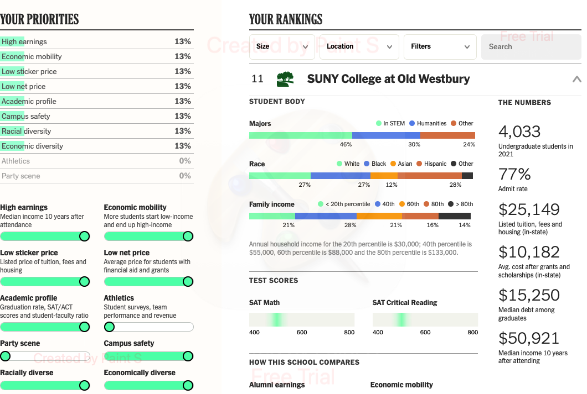
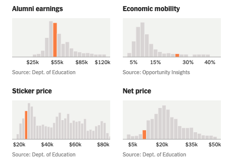
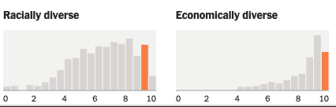

Welcome To Class!
High Expectations

How hard is this class?
- * 4-year Liberal Arts Colleges such as Old Westbury *
Why Old Westbury?
|  |   |
Why is this class hard?
You must show math skills "on your own"Time and communication is always more important than "being a genius".
You must be willing to grow
- Check out the Prof's study skills website at www.jdambroise.com/studyaids
Why learn math?
Humans need to be able to understand computer outputReasons and rationale are equally important as final answers.
- Use calculators only as a check, not as a substitute for learning.
Don't blindly copy apps

Academic dishonesty is taken very seriously.
When will I use math?
Direct uses in careers include...Students who fail ...
Students who succeed ...
Advice From Students
"I wish I had ...
- ... stopped working full time to study more."
- ... gotten help for personal problems."
- ... made time for Prof's Office Hours."
More advice from students
- "Finishing HW earlier actually helped me to understand the material better."
- "Working with peers helped me to talk out the concepts, even though I was initially nervous."
- "I was confused for months, but going to Office Hours cleared things up in five minutes!"
Studying Errors
- just watching, not doing it yourself
- not taking any notes, you WILL forget!
- just doing what you're told and not thinking about why it makes sense to you
- copying a calculator verbatim and not creating your own style
- giving up just because a problem has mulitple steps
- never asking for help from a human in person
Warning on Outside Materials
... explain things differently.
... explain things we are not doing in this class.
... can be helpful!
... can be confusing!
Use outside materials as supplement not replacement for our course materials.
Feel free to use outside materials! Just beware they can lead you astray.
Grading Standards
Aim high. Leave room for error!
Syllabus Quiz Due Before Next Class
Bring any questions for the next class.Find it in the class google drive linked on Brightspace.
Your Professors Can Help You
- Students may struggle with pursuing a degree their parents or someone else picked.
- If you choose a career path based on what you think you "should" do, rather than your passions, you may struggle more.
- Talk to your Professors, we can help you navigate and chat about the best path for you.
Disabilities: 1 in 4 Americans
Image Source: https://www.cdc.gov/ncbddd/disabilityandhealth/infographic-disability-impacts-all.html